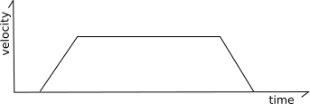
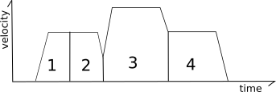
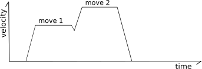
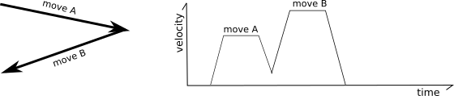
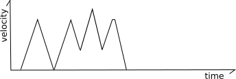
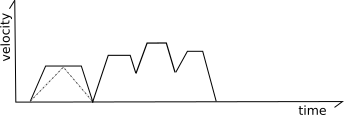
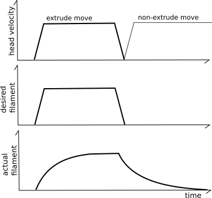
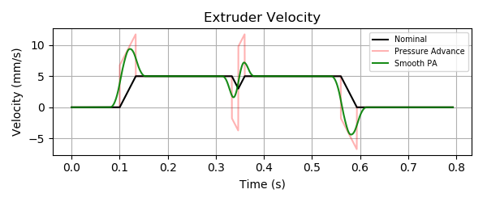

Kinematik¶
Dieses Dokument gibt einen Überblick darüber, wie Klipper die Roboterbewegung implementiert (seine Kinematik). Der Inhalt kann sowohl für Entwickler, die an der Klipper-Software arbeiten wollen, als auch für Benutzer, die jene Mechanik ihrer Maschinen besser verstehen wollen, von Interesse sein.
Beschleunigung¶
Klipper setzt bei jeder Geschwindigkeitsänderung des Druckkopfes ein Schema mit konstanter Beschleunigung um - die Geschwindigkeit wird schrittweise auf den neuen Wert geändert, statt ruckartig darauf zu springen. Klipper erzwingt die Beschleunigungsbegrenzung stets zwischen Druckkopf und Druckteil. Das den Extruder verlassende Filament kann recht empfindlich sein - schnelle Rucke und/oder Änderungen des Extruderflusses führen zu schlechter Qualität und schlechter Bettadhäsion. Auch wenn nicht extrudiert wird, kann ruckartiges Bewegen des Kopfes bereits abgelegtes Filament stören, sofern sich der Druckkopf auf derselben Höhe wie das Druckteil befindet. Die Begrenzung der Geschwindigkeitsänderungen des Druckkopfes (relativ zum Druckteil) verringert das Risiko, den Druck zu stören.
Ebenso wichtig ist die Begrenzung der Beschleunigung, damit die Schrittmotoren keine Schritte verlieren und die Maschine nicht übermäßig belastet wird. Klipper begrenzt das Drehmoment jedes Schrittmotors dadurch, dass es die Beschleunigung des Druckkopfes begrenzt. Eine am Druckkopf erzwungene Beschleunigungsbegrenzung begrenzt naturgemäß auch das Drehmoment der Schrittmotoren, die den Druckkopf bewegen (umgekehrt gilt das nicht immer).
Klipper setzt konstante Beschleunigung um. Die zentrale Formel für konstante Beschleunigung lautet:
velocity(time) = start_velocity + accel*time
Trapezform Generator¶
Klipper verwendet einen klassischen "Trapezgenerator", um die Bewegung jeder Fahrbewegung zu modellieren - jede Bewegung hat eine Startgeschwindigkeit, beschleunigt mit konstanter Beschleunigung auf eine Reisegeschwindigkeit, fährt mit konstanter Geschwindigkeit und bremst dann mit konstanter Beschleunigung auf die Endgeschwindigkeit ab.

Er heißt "Trapezgenerator", weil das Geschwindigkeitsdiagramm der Bewegung wie ein Trapez aussieht.
Die Reisegeschwindigkeit ist stets größer oder gleich der Start- und der Endgeschwindigkeit. Die Beschleunigungsphase kann die Dauer null haben (wenn die Startgeschwindigkeit gleich der Reisegeschwindigkeit ist), die Konstantfahrphase kann die Dauer null haben (wenn die Bewegung unmittelbar nach dem Beschleunigen abzubremsen beginnt) und/oder die Bremsphase kann die Dauer null haben (wenn die Endgeschwindigkeit gleich der Reisegeschwindigkeit ist).

Look-ahead¶
Das "Look-ahead"-System dient dazu, die Eckgeschwindigkeiten zwischen Bewegungen zu bestimmen.
Betrachten Sie die folgenden zwei Bewegungen in einer XY-Ebene:
In der obigen Situation wäre es möglich, nach der ersten Bewegung vollständig abzubremsen und zu Beginn der nächsten Bewegung wieder vollständig zu beschleunigen; das ist jedoch nicht ideal, da all dieses Beschleunigen und Abbremsen die Druckzeit stark erhöhen würde und die häufigen Änderungen des Extruderflusses zu schlechter Druckqualität führen würden.
Um dies zu lösen, reiht der "Look-ahead"-Mechanismus mehrere eingehende Bewegungen in eine Warteschlange ein und analysiert die Winkel zwischen den Bewegungen, um eine sinnvolle Geschwindigkeit für den Übergang zwischen zwei Bewegungen zu bestimmen. Verläuft die nächste Bewegung nahezu in derselben Richtung, muss der Kopf nur wenig (wenn überhaupt) abbremsen.

Bildet die nächste Bewegung jedoch einen spitzen Winkel (der Kopf fährt in der nächsten Bewegung nahezu in die Gegenrichtung), ist nur eine geringe Übergangsgeschwindigkeit zulässig.

Die Übergangsgeschwindigkeiten werden über eine "angenäherte Zentripetalbeschleunigung" bestimmt. Am besten vom Autor beschrieben. In Klipper werden die Übergangsgeschwindigkeiten jedoch konfiguriert, indem man die gewünschte Geschwindigkeit für eine 90°-Ecke angibt (die "square corner velocity"); die Übergangsgeschwindigkeiten für andere Winkel werden daraus abgeleitet.
Schlüsselformel für Look-ahead:
end_velocity^2 = start_velocity^2 + 2*accel*move_distance
Mindestanteil der Konstantfahrt¶
Klipper setzt außerdem einen Mechanismus um, der die Bewegungen kurzer "Zickzack"-Fahrbewegungen glättet. Betrachten Sie die folgenden Bewegungen:

Im obigen Fall kann der häufige Wechsel zwischen Beschleunigen und Abbremsen die Maschine zum Schwingen bringen, was sie belastet und die Geräuschentwicklung erhöht. Klipper setzt einen Mechanismus um, der sicherstellt, dass zwischen Beschleunigung und Abbremsung stets ein gewisser Anteil an Fahrt mit Reisegeschwindigkeit liegt. Dazu wird die Höchstgeschwindigkeit einzelner Bewegungen (oder Bewegungsfolgen) so weit reduziert, dass eine Mindeststrecke mit Reisegeschwindigkeit zurückgelegt wird - im Verhältnis zur Strecke, die während Beschleunigung und Abbremsung zurückgelegt wird.
Klipper setzt diese Funktion um, indem es sowohl eine reguläre Bewegungsbeschleunigung als auch eine virtuelle Rate für den "Übergang von Beschleunigung zu Abbremsung" führt:

Konkret berechnet der Code, welche Geschwindigkeit jede Bewegung hätte, wenn sie auf diese virtuelle Rate für den Übergang von Beschleunigung zu Abbremsung begrenzt wäre. In der obigen Abbildung stellen die gestrichelten grauen Linien diese virtuelle Beschleunigungsrate für die erste Bewegung dar. Kann eine Bewegung mit dieser virtuellen Beschleunigungsrate ihre volle Reisegeschwindigkeit nicht erreichen, wird ihre Höchstgeschwindigkeit auf den Wert reduziert, den sie mit dieser virtuellen Beschleunigungsrate erreichen könnte.
Bei den meisten Bewegungen liegt diese Grenze auf oder oberhalb der ohnehin bestehenden Grenzen der Bewegung, sodass sich das Verhalten nicht ändert. Bei kurzen Zickzack-Bewegungen verringert diese Grenze jedoch die Höchstgeschwindigkeit. Beachten Sie, dass sich die tatsächliche Beschleunigung innerhalb der Bewegung dadurch nicht ändert - die Bewegung nutzt weiterhin das normale Beschleunigungsschema bis zu ihrer angepassten Höchstgeschwindigkeit.
Schritte generieren¶
Sobald der Look-ahead-Vorgang abgeschlossen ist, ist die Druckkopfbewegung für die betreffende Fahrbewegung vollständig bekannt (Zeit, Startposition, Endposition, Geschwindigkeit an jedem Punkt) und es können die Schrittzeitpunkte für die Bewegung erzeugt werden. Dieser Vorgang findet in den "Kinematikklassen" des Klipper-Codes statt. Außerhalb dieser Kinematikklassen wird alles in Millimetern, Sekunden und im kartesischen Koordinatenraum geführt. Aufgabe der Kinematikklassen ist es, aus diesem allgemeinen Koordinatensystem in die Hardwarebesonderheiten des jeweiligen Druckers umzurechnen.
Klipper verwendet einen iterativen Löser, um die Schrittzeitpunkte für jeden Schrittmotor zu erzeugen. Der Code enthält die Formeln zur Berechnung der idealen kartesischen Koordinaten des Kopfes zu jedem Zeitpunkt sowie die kinematischen Formeln zur Berechnung der idealen Schrittmotorpositionen aus diesen kartesischen Koordinaten. Mit diesen Formeln kann Klipper den idealen Zeitpunkt bestimmen, zu dem sich der Schrittmotor an der jeweiligen Schrittposition befinden soll. Die betreffenden Schritte werden anschließend zu diesen berechneten Zeitpunkten eingeplant.
Die zentrale Formel zur Bestimmung der bei konstanter Beschleunigung zurückgelegten Wegstrecke lautet:
move_distance = (start_velocity + .5 * accel * move_time) * move_time
und die zentrale Formel für eine Bewegung mit konstanter Geschwindigkeit lautet:
move_distance = cruise_velocity * move_time
Die zentralen Formeln zur Bestimmung der kartesischen Koordinate einer Bewegung bei gegebener Wegstrecke lauten:
cartesian_x_position = start_x + move_distance * total_x_movement / total_movement
cartesian_y_position = start_y + move_distance * total_y_movement / total_movement
cartesian_z_position = start_z + move_distance * total_z_movement / total_movement
Kartesische Roboter¶
Das Erzeugen von Schritten für kartesische Drucker ist der einfachste Fall. Die Bewegung auf jeder Achse steht in unmittelbarem Zusammenhang mit der Bewegung im kartesischen Raum.
Schlüsselformeln:
stepper_x_position = cartesian_x_position
stepper_y_position = cartesian_y_position
stepper_z_position = cartesian_z_position
CoreXY Roboter¶
Das Erzeugen von Schritten auf einer CoreXY-Maschine ist nur wenig komplexer als bei einfachen kartesischen Robotern. Die zentralen Formeln lauten:
stepper_a_position = cartesian_x_position + cartesian_y_position
stepper_b_position = cartesian_x_position - cartesian_y_position
stepper_z_position = cartesian_z_position
Delta Roboter¶
Die Schritterzeugung bei einem Delta-Roboter beruht auf dem Satz des Pythagoras:
stepper_position = (sqrt(arm_length^2
- (cartesian_x_position - tower_x_position)^2
- (cartesian_y_position - tower_y_position)^2)
+ cartesian_z_position)
Schrittmotor Beschleunigungsgrenzwerte¶
Bei Delta-Kinematik kann eine Bewegung, die im kartesischen Raum beschleunigt, an einem einzelnen Schrittmotor eine Beschleunigung erfordern, die größer ist als die Beschleunigung der Bewegung. Das kann auftreten, wenn ein Schrittmotorarm eher waagerecht als senkrecht steht und die Bewegungslinie nahe am Turm dieses Schrittmotors vorbeiführt. Obwohl solche Bewegungen eine Schrittmotorbeschleunigung oberhalb der maximal konfigurierten Bewegungsbeschleunigung des Druckers erfordern können, ist die von diesem Schrittmotor bewegte effektive Masse kleiner. Die höhere Schrittmotorbeschleunigung führt daher nicht zu einem wesentlich höheren Drehmoment und gilt folglich als unbedenklich.
Um Extremfälle zu vermeiden, erzwingt Klipper jedoch eine Obergrenze für die Schrittmotorbeschleunigung in Höhe des Dreifachen der konfigurierten maximalen Bewegungsbeschleunigung des Druckers. (Entsprechend ist die Höchstgeschwindigkeit des Schrittmotors auf das Dreifache der maximalen Bewegungsgeschwindigkeit begrenzt.) Um diese Grenze einzuhalten, haben Bewegungen am äußersten Rand des Bauraums (wo ein Schrittmotorarm nahezu waagerecht stehen kann) eine geringere maximale Beschleunigung und Geschwindigkeit.
Extruder Kinematik¶
Klipper setzt die Extruderbewegung in einer eigenen Kinematikklasse um. Da Timing und Geschwindigkeit jeder Druckkopfbewegung für jede Fahrbewegung vollständig bekannt sind, lassen sich die Schrittzeitpunkte für den Extruder unabhängig von der Berechnung der Schrittzeitpunkte der Druckkopfbewegung berechnen.
Die grundlegende Extruderbewegung ist einfach zu berechnen. Die Erzeugung der Schrittzeitpunkte verwendet dieselben Formeln wie bei kartesischen Robotern:
stepper_position = requested_e_position
Druckvorschub¶
Versuche haben gezeigt, dass sich die Modellierung des Extruders über die grundlegende Extruderformel hinaus verbessern lässt. Im Idealfall sollte im Verlauf einer Extrusionsbewegung an jedem Punkt der Bewegung dasselbe Filamentvolumen abgelegt werden und nach der Bewegung kein weiteres Volumen austreten. Leider stellt man häufig fest, dass die grundlegenden Extrusionsformeln dazu führen, dass zu Beginn von Extrusionsbewegungen zu wenig Filament aus dem Extruder austritt und nach Ende der Extrusion überschüssiges Filament nachläuft. Dies wird häufig als "Ooze" bezeichnet.

Das System "Pressure Advance" versucht, dies durch ein anderes Extrudermodell zu berücksichtigen. Statt naiv anzunehmen, dass jeder in den Extruder eingezogene mm^3 Filament unmittelbar zu genau diesem Volumen am Extruderausgang führt, verwendet es ein druckbasiertes Modell. Der Druck steigt, wenn Filament in den Extruder geschoben wird (wie beim Hookeschen Gesetz), und der zum Extrudieren erforderliche Druck wird maßgeblich von der Durchflussrate durch die Düsenöffnung bestimmt (wie beim Gesetz von Hagen-Poiseuille). Der zentrale Gedanke ist, dass sich der Zusammenhang zwischen Filament, Druck und Durchflussrate über einen linearen Koeffizienten modellieren lässt:
pa_position = nominal_position + pressure_advance_coefficient * nominal_velocity
Informationen dazu, wie sich dieser Pressure-Advance-Koeffizient ermitteln lässt, finden Sie im Dokument Pressure Advance.
Die grundlegende Pressure-Advance-Formel kann dazu führen, dass der Extrudermotor plötzliche Geschwindigkeitsänderungen ausführt. Klipper setzt eine "Glättung" der Extruderbewegung um, um dies zu vermeiden.

Die obige Grafik zeigt ein Beispiel mit zwei Extrusionsbewegungen und einer Eckgeschwindigkeit ungleich null dazwischen. Beachten Sie, dass das Pressure-Advance-System während der Beschleunigung zusätzliches Filament in den Extruder schiebt. Je höher die gewünschte Filamentdurchflussrate, desto mehr Filament muss während der Beschleunigung zum Druckaufbau nachgeschoben werden. Während des Abbremsens des Kopfes wird das zusätzliche Filament zurückgezogen (der Extruder hat dann eine negative Geschwindigkeit).
Die "Glättung" wird über einen gewichteten Mittelwert der Extruderposition über einen kurzen Zeitraum umgesetzt (festgelegt über den Konfigurationsparameter pressure_advance_smooth_time). Diese Mittelung kann sich über mehrere G-Code-Bewegungen erstrecken. Beachten Sie, dass sich der Extrudermotor bereits vor dem nominellen Beginn der ersten Extrusionsbewegung in Bewegung setzt und sich nach dem nominellen Ende der letzten Extrusionsbewegung weiterbewegt.
Zentrale Formel für "geglättetes Pressure Advance":
smooth_pa_position(t) =
( definitive_integral(pa_position(x) * (smooth_time/2 - abs(t - x)) * dx,
from=t-smooth_time/2, to=t+smooth_time/2)
/ (smooth_time/2)^2 )